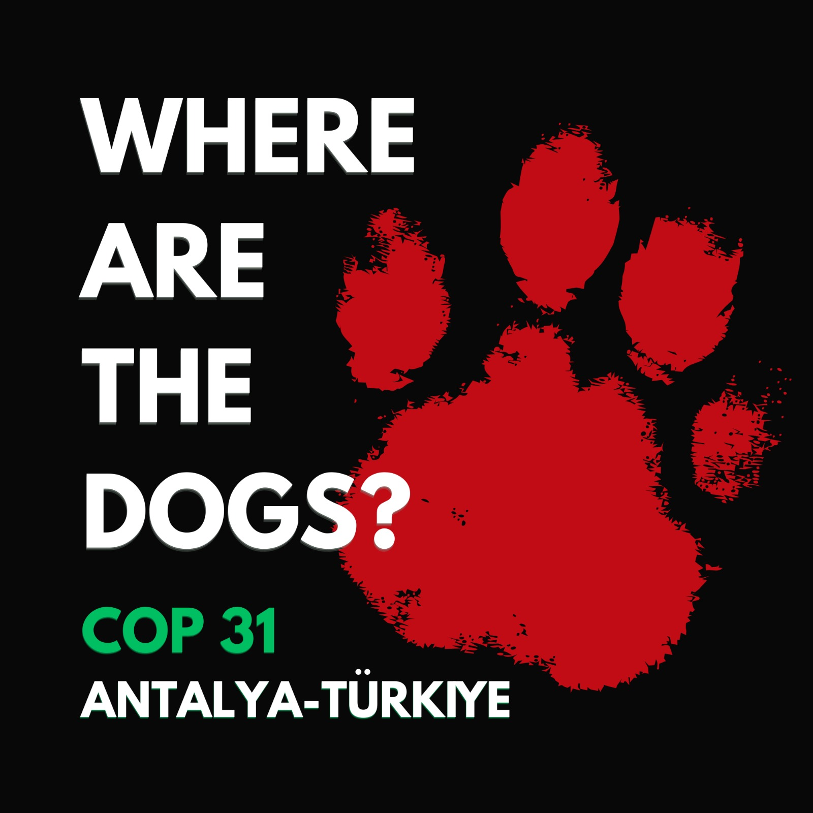
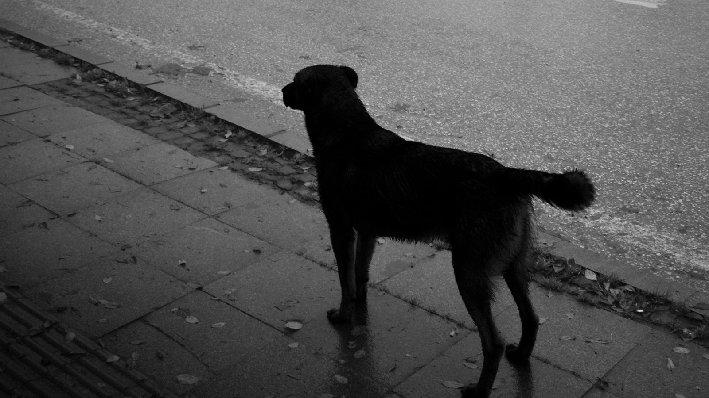
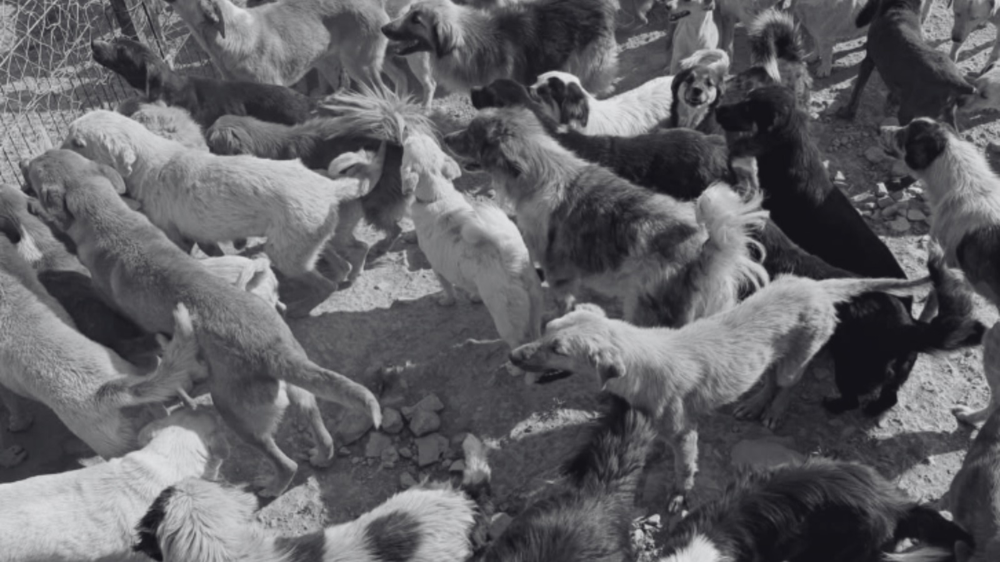
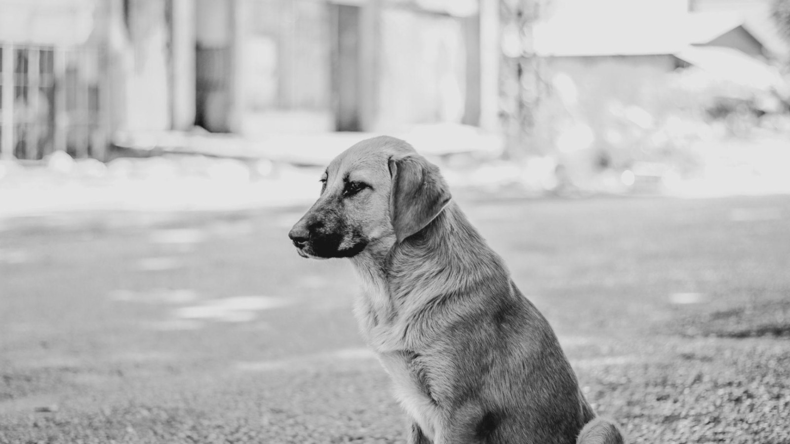

After dark
Municipal teams arrived at the campus shelters, according to accounts from students and volunteers.
A call for truth and accountability
4 million taken from the streets of Türkiye.
They are not statistics. They are living beings — known, loved and cared for by communities. We demand transparency about their fate.
Read their story ↓
THE QUESTION IS SIMPLE
Across Türkiye, community animals face an uncertain future. Families, students and volunteers are asking for answers — and refusing to let these lives disappear without accountability.
WHAT HAPPENED
At Ege University, volunteers say 160 community dogs were taken from campus shelters. People who had cared for them for years were left asking the same question: where were the dogs taken?
Municipal teams arrived at the campus shelters, according to accounts from students and volunteers.
Students and volunteers say barriers prevented them from reaching the animals they had been caring for.
Community members say the dogs were removed, leaving them without clear information about their whereabouts.
We call for verifiable information about the dogs’ location, condition and future.
Where are the dogs — and who will answer for them?
This is a demand for transparency, humane treatment and public accountability.
THE LAW BEHIND THE CRISIS
Türkiye’s 2024 amendments to its animal protection law changed the framework for dealing with stray animals. The consequences for animals and communities remain a matter of urgent public concern.
Read the Official Gazette ↗THIS IS A MOVEMENT
Stand with community animals and the people who care for them. Share verified information, ask public institutions for answers, and keep the focus on the lives at stake.
THEY ARE NOT INVISIBLE



DON’T LET THEM DISAPPEAR
Share the campaign. Ask for answers. Keep the spotlight on the dogs and the need for humane, transparent treatment.